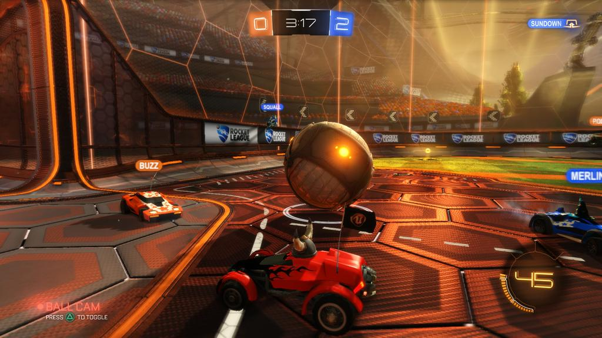
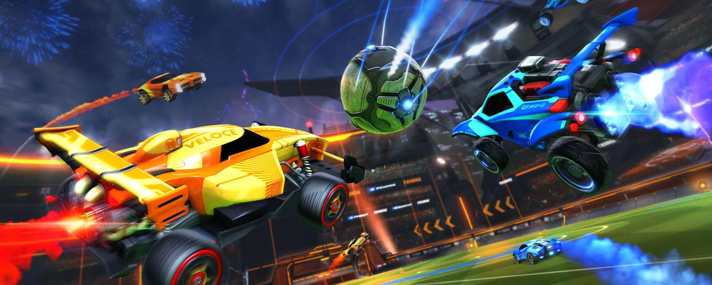

Rating: 8,4
Multiplayer player
Single Player
Online
Genre: Shooting
Ontwikkelaar: Activision
PEGI 3
Rocket League
Rocket League is een voetbalachtig computerspel, dat gespeeld wordt met in-game voertuigen. Rocket League is ontwikkeld en uitgegeven door Psyonix. In het spel besturen spelers een voertuig waarmee ze moeten proberen doelpunten te scoren op een veld dat overeenkomsten vertoont met een voetbalveld. Het spel is beschikbaar voor Nintendo Switch, PlayStation 4, PlayStation 5, Xbox One, Microsoft Windows en Linux. Tijdens online wedstrijden is er volledige cross-platform voorzien. Hierdoor kunnen spelers van alle bovenstaande platformen samen spelen.
Medium Specificaties:
Processor: Core i3 6100 / AMD A6-6400K
RAM: 4 GB of meer
Videokaart: NVIDIA GTX 950 / AMD R7 360


Reviews
“Whether it’s online casual or ranked matches, no-pressure exhibitions, split-screen local co-op with up to four players, or an intense 36-week season mode, Rocket League is all about getting into the next throttle-pounding match as fast as possible. Unfortunately, servers are still struggling, which means your mileage may vary day-to-day when it comes to online features. But the silver lining is the mostly formidable AI can make even offline matches interesting and tense. The execution of this simple idea is so strong and so engaging that it keeps bringing me back, time and time again, for just one more match.”